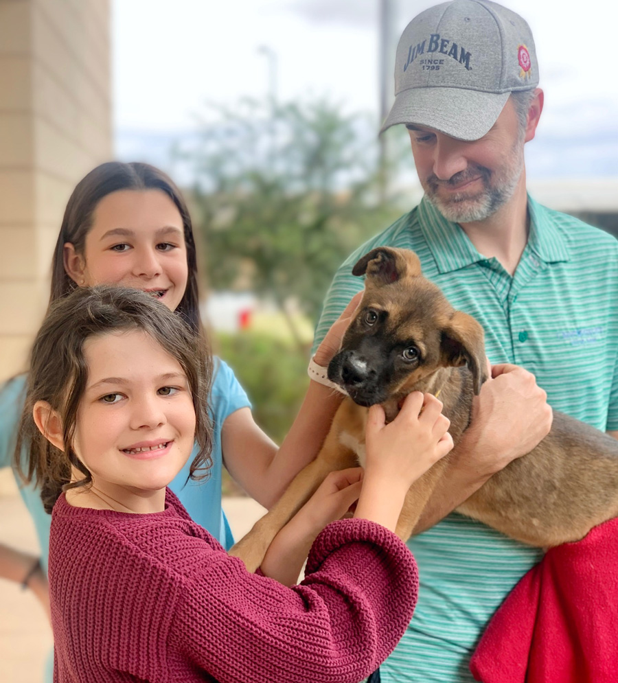
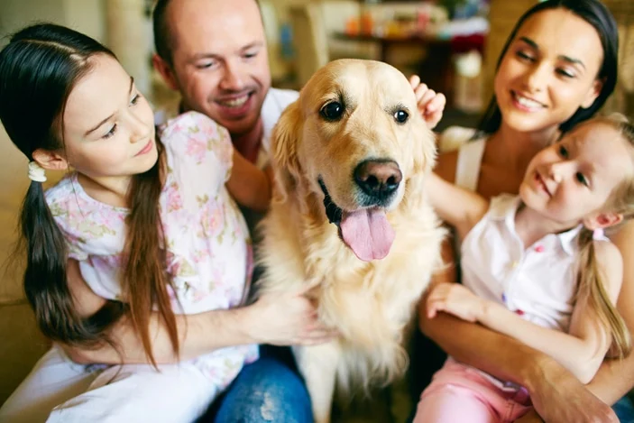
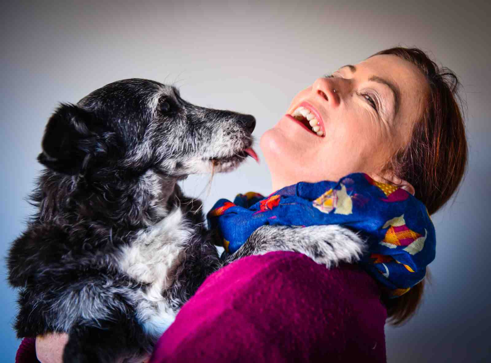

|  |
Meet the Smith family and their rescued Boxer, Buster. Buster's journey
began in adversity when he was found abandoned and mistreated, struggling to
survive on the streets. Someone with a heart for animals reached out to our shelter,
Rescue Waggin, and together, we took him in, giving Buster a chance at a new life as he awaited a new family.
Then, the Smiths entered his life. They welcomed Buster into their family, and
in doing so, they lit up his world and he lit up theirs. The Smiths' home soon filled with the
infectious joy of Buster's tail-wagging enthusiasm. Buster's transformation was nothing short of
remarkable. From a dog who had faced abandonment and hardship,
he became a beloved family member, filling their days with companionship and love.
Buster's story is a testament to the incredible transformation that can happen through
adoption, a heartwarming tale of a dog and a family finding hope and happiness together. |
|  |
Meet the Hartman family and their rescued Golden Retriever, Sunny. Sunny's journey
began when his previous owners could no longer provide the care he deserved. With heavy hearts,
they made the difficult decision to bring him to our shelter, Rescue Waggin. The Hartman family's
hearts were touched when they visited our shelter. Drawn by Sunny's radiant spirit and unmistakable
charm, they knew he was meant to be a part of their lives. They opened their hearts and home to
this lovable Golden Retriever, and in doing so, they gave Sunny the loving, forever family he
had been waiting for. |
|  |
Meet the Adams family and their beloved mixed-breed companion, Lucky.
Lucky's adventure began when he was found as a stray, wandering the streets with a
spirit full of curiosity and a heart yearning for a home. Our shelter, Rescue Waggin,
became his refuge. The Adams family entered Lucky's world when they decided to open
their hearts to the magic of mixed-breed dogs. Drawn by Lucky's one-of-a-kind charm
and magnetic personality, they brought him into their lives. Lucky quickly became an
inseparable part of the Adams family. His mix of traits and personalities made every
day an adventure. His playful nature, unwavering loyalty, and the ever-surprising
combinations of characteristics brought endless laughter and happiness to their household. |